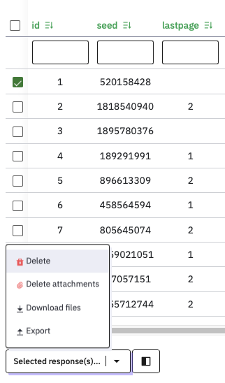
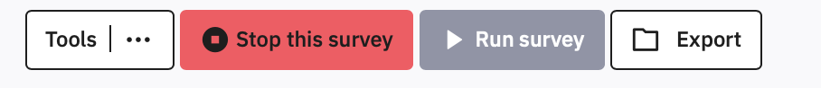
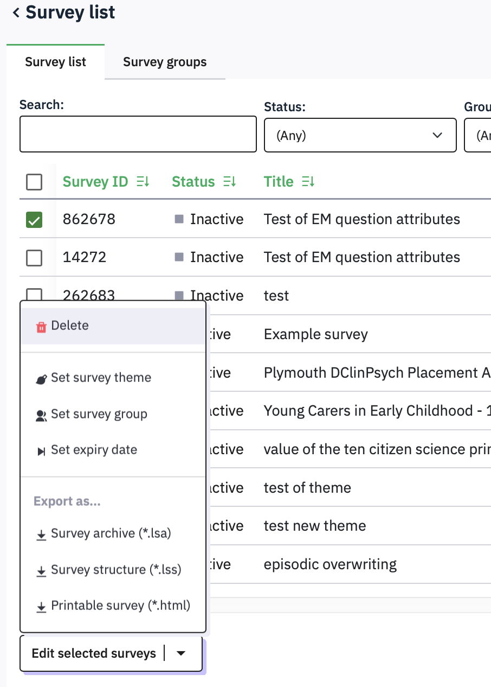
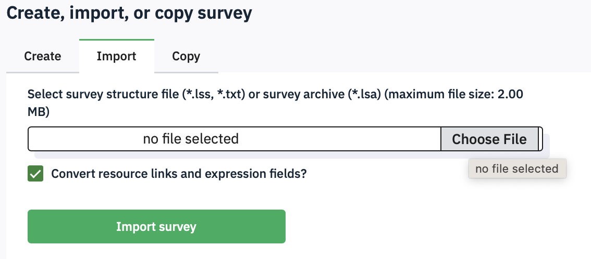

10 Data handling and security
10.1 Confidentiality
An advantage of using our own Limesurvey implementation is that the data is saved within the University computing environment, so there are no third party data protection concerns.
Nevertheless, you must be very careful to avoid collecting personal data within the survey that could identify the respondent, unless you absolutely have to.
You must never ask for details such as names, initials, place of birth, mother’s maiden name, student ID or email address.
If you are using SONA then you can identify your participant using the unique Participant identifier that SONA can send to the survey (see previous section). You can look up your participants in the Download Participant List option in SONA to pair up the SONA id with an individual. For this reason, your Limesurvey data is classed as ‘linked anonymous’.
If you have a list of email addresses to send the survey invitation to, then you can link that to a code number and include the code number in the survey.
Remember: Never ask anyone to enter their email address in the main survey.
10.2 Chaining to another survey
If your survey is open to all anonymously, and you want to be able to invite people to a follow-up survey, then you should forward them to a second survey that does nothing other than record their email address, so that it is not associated with their answers.
Make a new survey that has one question asking for an email address
Validate the response to check that it is an email address
Make the practice survey link to this new survey when it is completed
You can use the End URL to send the participant’s random id code from the first survey to another, standalone survey, where you can create a separate survey that uses a Short Free Text question to record email addresses. The second survey will also have to be set up to receive the id, just as the first one was, using Panel Integration.
10.3 Deleting Data from the platform
If you have pilot or testing data that you do not want to keep in the datafile, then you can selectively delete the whole attempt before opening the survey. Alternatively you can keep the test data and filter it out during analysis (safer, in my view).
To remove individual responses from the data, click Responses to see the data collected so far. Check the box next to the row you want to delete, and then from the Selected response(s)… menu at the bottom of the window, select Delete. You will then need to click a scary red box.

Arguably, once a survey is finished, and you have downloaded the data, responses should be deleted from the survey platform.
To delete ALL of the data, for example at the end of the study once you have downloaded the data, select all of the rows at once by checking the box at the top of the column.
10.4 Archiving and deleting old surveys
When you have completed a survey, downloaded the data, and are sure you will not run it again, then you should download it for safe keeping. You can then delete it from psysurvey to keep the list of your surveys manageable, and to avoid the server filling up.
To download an archive for safekeeping, click the Export button at the top of the screen :

Alternatively, you can export surveys from the Survey list page by checking the box next to the survey and clicking Edit selected surveys.

If your study is still active, then you can download a limesurvey archive (.lsa) that includes the data you have collected. If it is not active, you can just download a limesurvey structure file (.lss) that only contains the survey. The latter version is fine, as you will already have downloaded your data separately.
Once you have exported it, you can delete it from the Survey list page by selecting Delete from this page..
If you ever want to run the survey again, or make a modified version of it, then you would use the purple Create Survey button and import an .lsa or .lss file from your computer:
